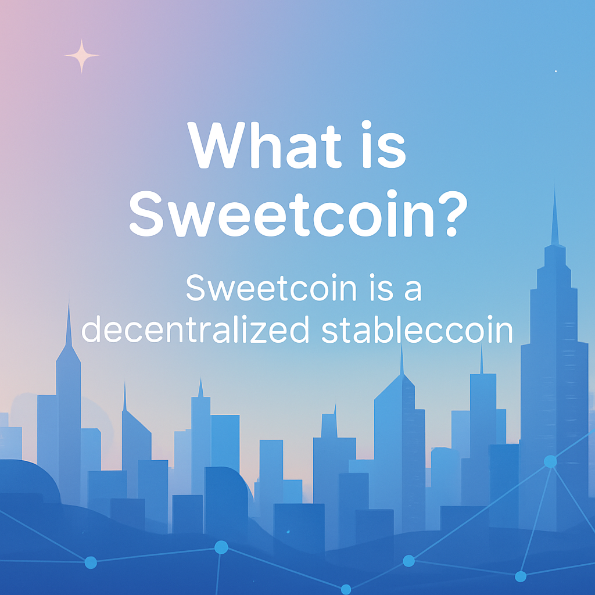
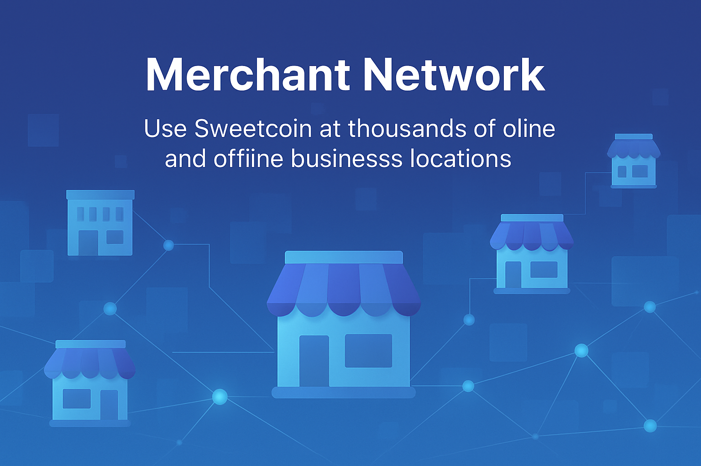

Sweetcoin is a decentralized stablecoin governed by AI and backed by real-world consensus. It’s more than a cryptocurrency — it’s a revolution in how we measure value.
Read WhitepaperSweetcoin combines decentralized issuance, AI-driven monetary policy, and a real-world reference unit — the price of an ice cream cone — to maintain stability and usability. It’s governed by smart contracts, not institutions.
Sweetcoin is designed for real-world spending — from coffee shops to corner stores, vending machines to virtual worlds. It's built to be used, not just held.
Be part of a global movement to redefine money. Sweetcoin empowers people, not institutions — and it starts with you.
From forward-thinking developers to independent vendors and tech communities, Sweetcoin is gaining traction as a symbol of value freedom.
